Xin chào, tôi là
Sinh viên ngành Khoa học Dữ liệu tại Trường Đại học Công nghệ, ĐHQGHN. Đam mê khai phá dữ liệu, nghiên cứu hệ thống phân tán và ứng dụng AI thông minh.
Hành trình khám phá công nghệ số và trí tuệ nhân tạo
Tôi là Nguyễn Lê Ngọc Bách, sinh viên năm nhất ngành Khoa học Dữ liệu tại Trường Đại học Công nghệ, Đại học Quốc gia Hà Nội. Với niềm đam mê khám phá sức mạnh của dữ liệu và trí tuệ nhân tạo, tôi luôn tìm kiếm cơ hội để học hỏi và phát triển bản thân.
Portfolio này không chỉ là một bài tập môn học, mà còn là nơi lưu trữ và thể hiện toàn bộ quá trình học tập, kỹ năng và sản phẩm đã tạo ra trong môn "Nhập môn Công nghệ số và Ứng dụng Trí tuệ nhân tạo". Mục tiêu:
Tổng hợp 7 bài tập chi tiết, thể hiện toàn diện kỹ năng số theo bảng điểm Rubric Mức 4
Bài 1 — Máy tính và các thiết bị ngoại vi
Làm quen toàn diện với hệ điều hành Linux, thiết lập cấu trúc quản lý tập tin logic bao gồm việc tạo, sao chép, di chuyển tệp, phân biệt chế độ xóa Trash và xóa vĩnh viễn (Shift + Delete).
Bài tập được thực hiện trên hệ điều hành Linux, sử dụng trình quản lý tệp Dolphin File Manager để minh họa toàn bộ thao tác quản lý dữ liệu số.
// Hãy tương tác trực quan với các thao tác quản lý dữ liệu số dưới đây:
Places
Bước 1 — Mở Dolphin: Nhấp vào biểu tượng thư mục màu xanh để mở ứng dụng (có thể tìm ứng dụng bằng cách tìm kiếm).
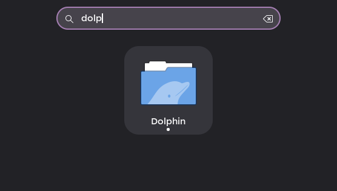
Bước 2 — Truy cập vào ổ đĩa/Thư mục: Sau khi mở ứng dụng, ở phần góc trái màn hình, hãy chọn thư mục "Documents".
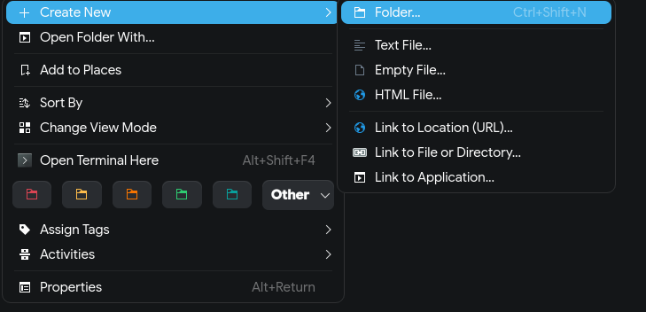
Bước 3 — Tạo thư mục mới: Nhấp chuột phải vào khoảng trống, rồi chọn "Create New", rồi nhấn vào "Folder" (hoặc nhấn tổ hợp phím CTRL + SHIFT + N). Đặt tên thư mục là ThucHanh_NguyenLeNgocBach, rồi nhấn "Ok" để tạo thư mục.
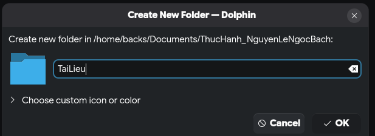
Bước 4 — Vào thư mục vừa tạo: Nhấp đúp vào thư mục ThucHanh_NguyenLeNgocBach.
Bước 5 — Tạo tệp tin văn bản: Nhấp chuột phải vào khoảng trống, chọn "Create New", chọn "Text File". Đặt tên là GhiChu.txt, rồi nhấn "Ok" để tạo file.
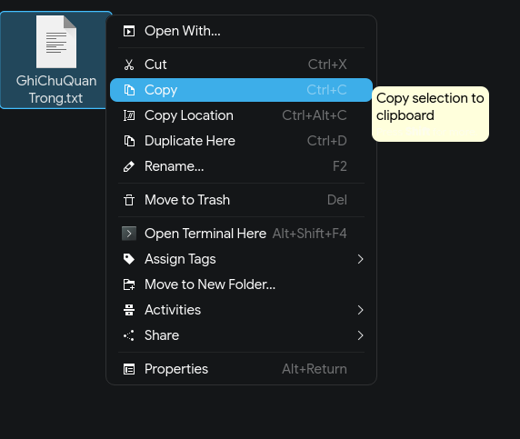
Bước 6 — Đổi tên tệp tin: Nhấp chuột phải vào tệp GhiChu.txt → chọn Rename. Đổi tên thành GhiChuQuanTrong.txt. Nhấn Enter.
Bước 7 — Tạo thư mục con: Trong thư mục ThucHanh_NguyenLeNgocBach, nhấp chuột phải vào khoảng trống, chọn "Create New", chọn "Folder". Đặt tên là TaiLieu.
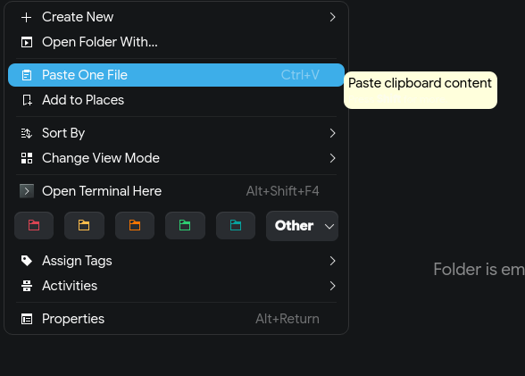
Bước 8 — Sao chép tệp tin (Copy & Paste):
GhiChuQuanTrong.txt → chọn Copy (hoặc chọn tệp rồi nhấn Ctrl + C).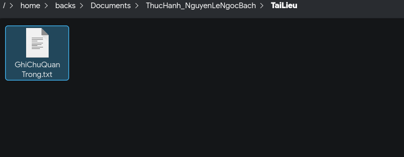
TaiLieu, nhấp chuột phải vào khoảng trống bên trong → chọn Paste One File (hoặc nhấn Ctrl + V). Bây giờ bạn có một bản sao của tệp trong thư mục TaiLieu.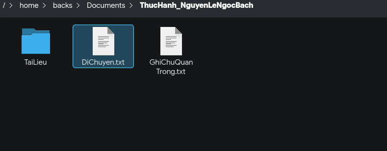
Bước 9 — Di chuyển tệp tin (Cut & Paste):
ThucHanh_NguyenLeNgocBach. Tạo một tệp mới tên là DiChuyen.txt.DiChuyen.txt → chọn Cut (hoặc chọn tệp rồi nhấn Ctrl + X).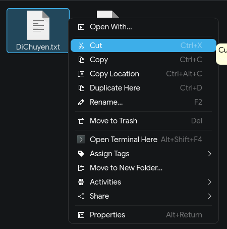
TaiLieu, nhấp chuột phải vào khoảng trống → chọn Paste (hoặc nhấn Ctrl + V). Tệp gốc đã biến mất khỏi vị trí cũ và chỉ còn ở vị trí mới.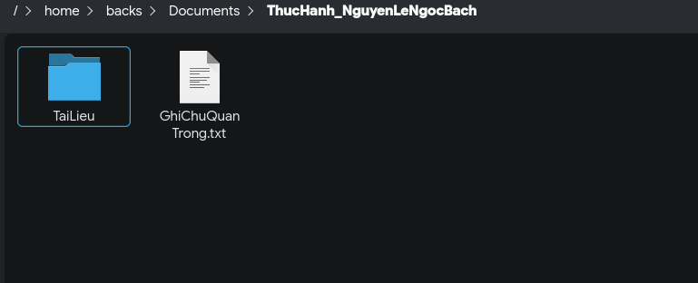
Bước 10 — Xóa tệp tin: Trong thư mục TaiLieu, nhấp chuột phải vào tệp GhiChuQuanTrong.txt → chọn Move to Trash. Tệp sẽ được chuyển vào Thùng rác (Trash).
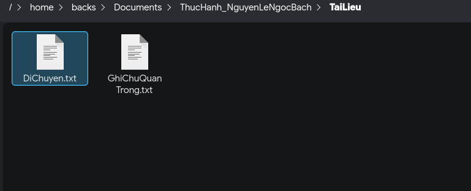
Bước 11 — Xóa vĩnh viễn: Chọn tệp DiChuyen.txt, nhấn giữ phím Shift và nhấn phím Delete. Một cảnh báo sẽ hiện ra. Nếu đồng ý, tệp sẽ bị xóa vĩnh viễn mà không qua Thùng rác.
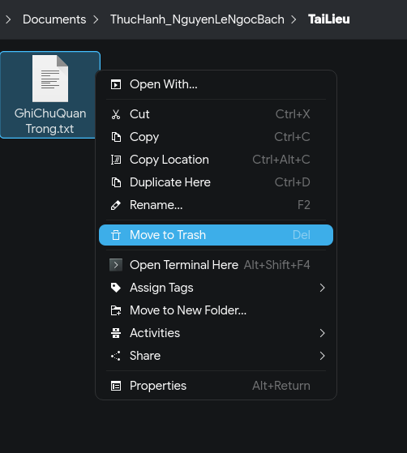
Bước 12 — Khôi phục từ Thùng rác (Tùy chọn): Vào mục Trash ở góc dưới màn hình bên trái. Tìm tệp GhiChuQuanTrong.txt đã xóa, nhấp chuột phải vào nó và chọn Restore to Former Location. Tệp sẽ quay trở lại vị trí ban đầu.
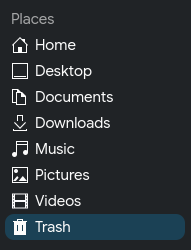
Hình ảnh minh họa đầy đủ các thao tác trên trình quản lý tệp Dolphin File Manager (Linux) theo từng bước trong bài thực hành Tuần 1:
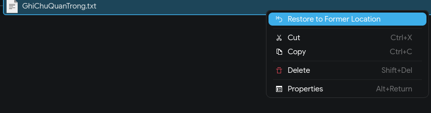
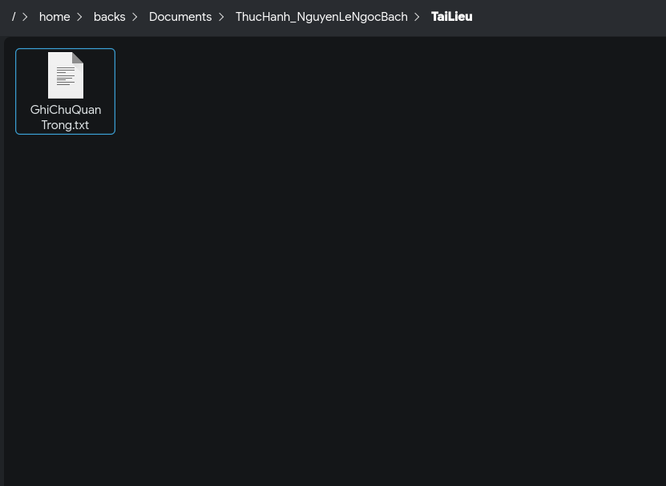
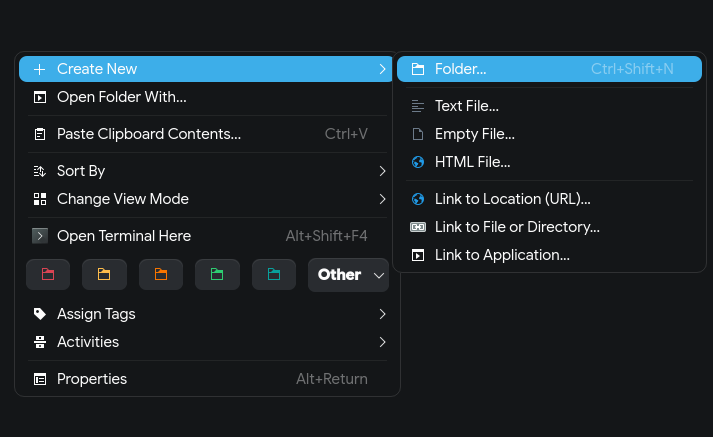
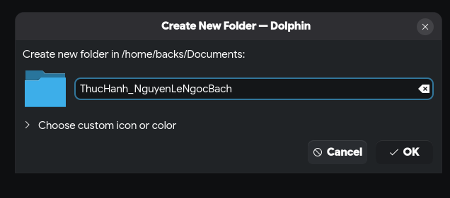
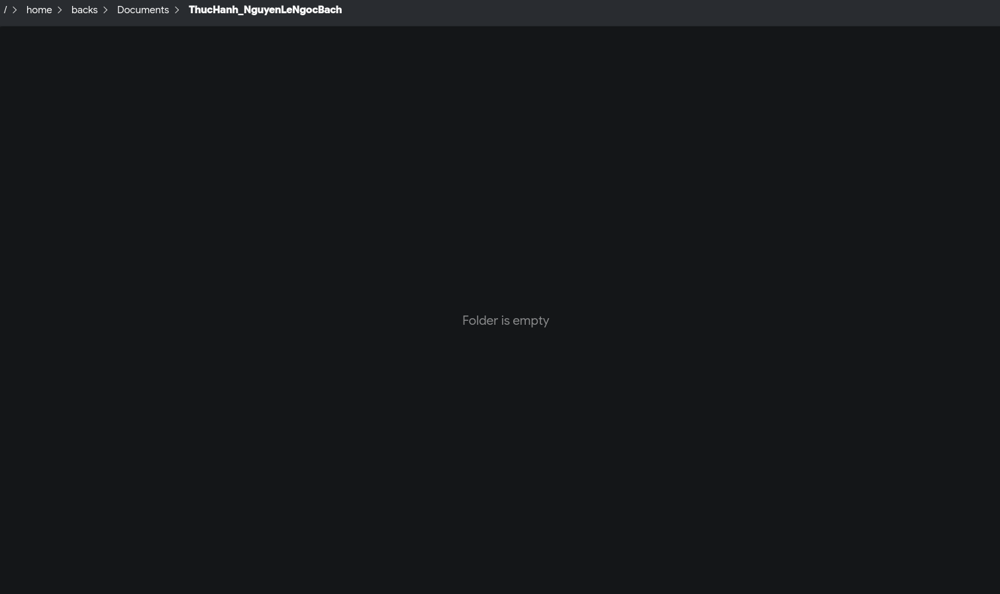
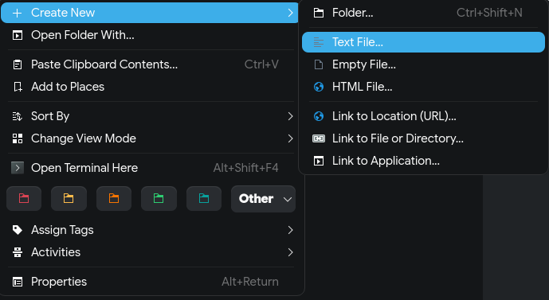
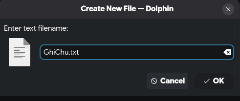
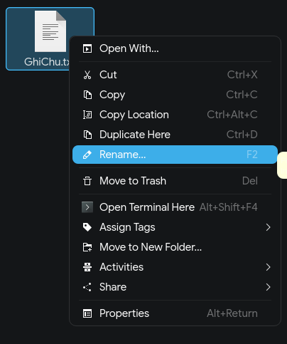
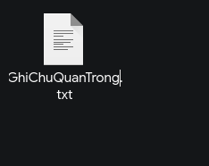
Việc làm quen với quản lý cây thư mục và quy tắc lưu trữ trên Linux giúp xây dựng thói quen tổ chức dữ liệu chuẩn hóa, phục vụ đắc lực cho các hoạt động quản lý Database và Pipeline dữ liệu trong tương lai. Phân biệt rõ Trash (có thể khôi phục) và Shift + Delete (xóa vĩnh viễn) là kỹ năng sống còn cho mọi nhà khoa học dữ liệu.
Bài 2 — Khai thác dữ liệu và thông tin
Thực hành kỹ năng tìm kiếm nâng cao kết hợp toán tử và áp dụng bộ tiêu chí đánh giá uy tín nghiên cứu khoa học phục vụ lĩnh vực Khoa học Dữ liệu.
"Vai trò Khoa học Dữ liệu trong thời đại Công nghệ số"
Phạm vi khảo sát: Phân cấp kỹ thuật chuyên sâu (Data Processing, Data Mining, ML) và tầm ảnh hưởng thực tiễn tối ưu hóa nền kinh tế số.
| Tài liệu tham khảo chính | Loại nguồn | Độ tin cậy | Tiêu chí đánh giá uy tín (CRAAP) | |
|---|---|---|---|---|
| 1 | Dunleavy, P. and Margetts, H. (2023) 'Data science, Artificial Intelligence and the Third Wave of Digital Era Governance', Public Policy and Administration, 40(2). | Tạp chí học thuật | Tác giả: GS đầu ngành. Cập nhật: Cực tốt (2023). NXB: Sage (Uy tín cao). | |
| 2 | Efron, B. and Hastie, T. Computer Age Statistical Inference: Algorithms, Evidence, and Data Science. | Sách chuyên khảo | Tác giả: Những huyền thoại ngành Thống kê. Phương pháp: Hệ thống hóa thuật toán cốt lõi. | |
| 3 | The CARE Principles for Indigenous Data Governance. | Tài liệu chuẩn | Nội dung: Khung nguyên tắc quốc tế về đạo đức dữ liệu. Tầm quan trọng: Thiết yếu cho phần phân tích quản trị. | |
| 4 | Van Der Aalst, W. (2016) 'Data Science in Action', Process Mining, pp. 3-23. | CS dữ liệu | Tác giả: Chuyên gia số 1 về Process Mining. Hạn chế: Thiếu cập nhật về GenAI/LLM (do xuất bản 2016). | |
| 5 | Vaisman, A. and Zimányi, E. Data Warehouse Systems: Design and Implementation [Electronic resource]. Available at: lic.vnu.edu.vn. | Thư viện VNU | Nội dung: Tài liệu chuẩn về kiến trúc kho dữ liệu. Được kiểm định bởi ĐHQG Hà Nội. | |
| 6 | Fan, J., Li, R., Zhang, C.-H. and Zou, H. Statistical Foundations of Data Science. | Sách chuyên khảo | Phương pháp: Nghiên cứu toán học chặt chẽ. Tác giả: Các giáo sư từ Princeton và Penn State. | |
| 7 | Skiena, S.S. The Data Science Design Manual. | Sách chuyên khảo | Ưu điểm: Uy tín về thuật toán. Tính ứng dụng: Rất thực tế trong thiết kế hệ thống dữ liệu. | |
| 8 | Evaluating COVID-19 Information and Risk-Averse Behaviours: Insights from Conjoint and Clustering Analyses in the UK, Japan, and Taiwan. | Tạp chí chuyên ngành | Phương pháp: Sử dụng Clustering/Conjoint Analysis. Nội dung: Ứng dụng DS giải quyết vấn đề xã hội. | |
| 9 | Berthold, M.R. and Hand, D.J. Intelligent Data Analysis: An Introduction. | Sách chuyên khảo | Nội dung: Kiến thức nền tảng vững chắc về phân tích dữ liệu thông minh. Phù hợp cho sinh viên mới bắt đầu. |
Xây dựng năng lực phân tích độ tin cậy dựa trên chỉ số H-index của tác giả và tính thời sự của ấn bản giúp nâng cao chất lượng nghiên cứu khoa học dữ liệu vượt trội.
Bài 3 — Tổng quan về trí tuệ nhân tạo
Nghiên cứu cơ chế vận duyệt ngôn ngữ của AI (Google Gemini) để thiết lập kịch bản Prompt học tập hiệu quả giúp giải quyết các bài toán trừu tượng.
// Hãy bấm chuyển đổi các tab để đối sánh hiệu quả phản hồi thực tế của AI:
// INPUT PROMPT:
"Tóm tắt cho tôi bài viết này: Climate Changes through Data Science..."
// GEMINI OUTPUT:
Kết quả tóm tắt chung chung, các ý lộn xộn, độ dài không kiểm soát được. Chỉ phù hợp để đọc lướt.
| Phiên bản | Kỹ thuật áp dụng | Phân tích kết quả đầu ra |
|---|---|---|
| Cơ bản | Zero-shot cơ bản | Kết quả chung chung, các ý lộn xộn, độ dài không kiểm soát được. Chỉ phù hợp để đọc lướt. |
| Cải tiến | Cấu trúc hóa (Formatting constraints), Chỉ định độ dài | AI trả về kết quả rõ ràng, đúng form yêu cầu. Tuy nhiên, văn phong vẫn còn hơi máy móc và chưa thực sự làm nổi bật được "insight" quan trọng nhất. |
| Nâng cao | Role-prompting, Chain-of-Thought, Few-shot | Sự khác biệt rõ rệt: Giọng văn trở nên sư phạm và dễ hiểu (nhờ đóng vai). Các lập luận được suy luận chặt chẽ (nhờ Chain-of-thought). Cấu trúc bám sát hoàn toàn ý đồ người học (nhờ Few-shot). Không chỉ tóm tắt mà còn định hướng cách học. |
Sử dụng mô hình lập luận Chain-of-Thought ("phân tích trước, trả lời sau") giúp giảm thiểu tối đa hiện tượng ảo giác (hallucination) của mô hình ngôn ngữ lớn. Công thức 4C (Context, Clear Task, Constraints, Clues) trở thành kim chỉ nam cho mọi tương tác AI trong học tập về sau.
Bài 4 — Giao tiếp và hợp tác trong môi trường số
Làm quen với việc tích hợp các quy trình làm việc số, phân chia vai trò và xử lý xung đột trong dự án nhóm "Trí tuệ nhân tạo và ứng dụng thực tiễn".
Hình ảnh minh chứng thực tế về bảng Kanban Trello (quản lý tiến độ) và lịch sử nhận xét Google Docs (giao tiếp bất đồng bộ) trong dự án nhóm "Trí tuệ nhân tạo và các ứng dụng thực tiễn":
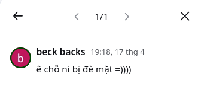
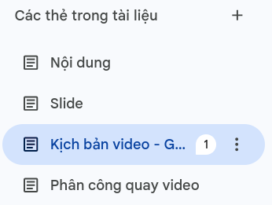
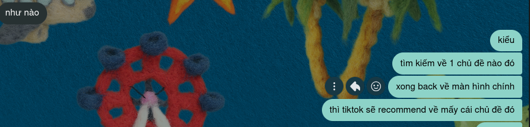
🟥 TO DO (Gấp)
🟨 IN PROGRESS
🟩 DONE
// Lịch sử nhận xét (Google Docs):
beck backs 19:18, 17 thg 4
"ê chỗ ni bị đè mặt =))))"
Trong bối cảnh làm việc nhóm hiện đại, việc sử dụng thành thạo các công cụ cộng tác trực tuyến là yếu tố then chốt để đảm bảo tiến độ và chất lượng dự án. Đối với dự án "Trí tuệ nhân tạo và các ứng dụng thực tiễn", tôi đã chủ động thiết lập và vận hành bộ 3 công cụ thuộc các nhóm chức năng khác nhau nhằm tối ưu hóa hiệu suất cá nhân:
| Thách thức | Nguyên nhân cốt lõi | Giải pháp khắc phục tiêu chuẩn (Mức 4) |
|---|---|---|
| Tin nhắn giao việc bị trôi | Tần suất thảo luận nhóm quá lớn gây loãng. | Cài đặt robot tự động nhắc nhở Deadline trên kênh Discord/Teams. |
| Xung đột khi soạn thảo chung | Nhiều thành viên chỉnh sửa đồng thời cùng một vị trí. | Kích hoạt tính năng Version History và bắt buộc viết ở chế độ "Suggesting". |
| Mất kiểm soát tiến độ | Không nắm bắt được tình trạng task của nhau. | Thiết lập hệ thống thẻ nhãn màu Trello nghiêm ngặt: Đỏ, Vàng, Xanh. |
Sự thành công của một dự án nhóm số không chỉ phụ thuộc vào công nghệ, mà là việc xây dựng văn hóa giao tiếp bất đồng bộ minh bạch, khoa học.
Bài 5 — Sáng tạo nội dung số
Kết hợp sức mạnh sáng tạo từ 3 công cụ GenAI (Gemini, DALL-E 3, Canva AI) để thiết kế Infographic CRISP-DM chuẩn hóa ứng dụng trong phát hiện gian lận lưới điện Smart Grid.
Hình ảnh vector Smart Grid (minh họa cho Prompt DALL-E 3) và Infographic CRISP-DM (thiết kế bằng Canva AI):
Hình 1: Vector Smart Grid — DALL-E 3 (Bước mô phỏng lưới điện thông minh)
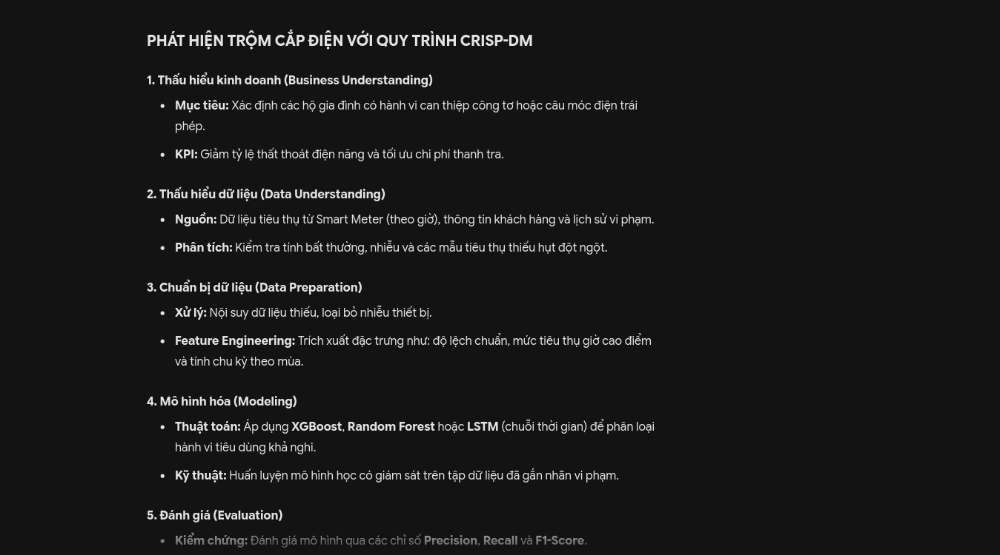
Hình 2: Infographic CRISP-DM — Canva AI (Bước thiết kế bố cục)
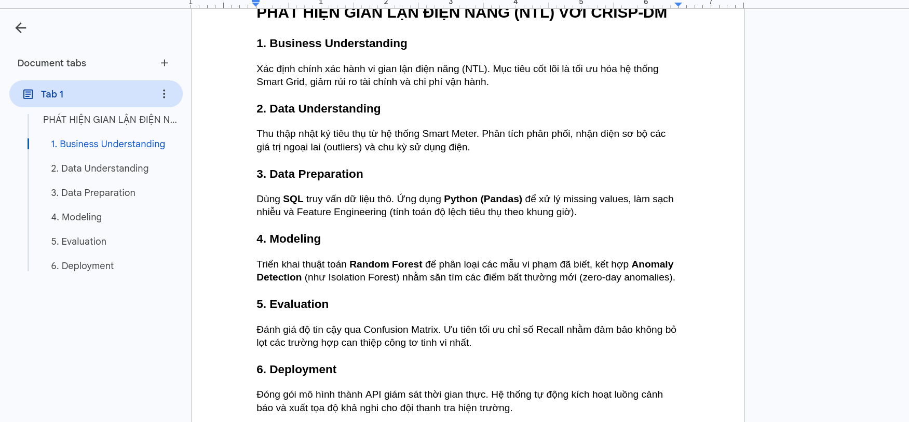
Hình 3 - 5: Minh chứng bổ sung quy trình sáng tạo
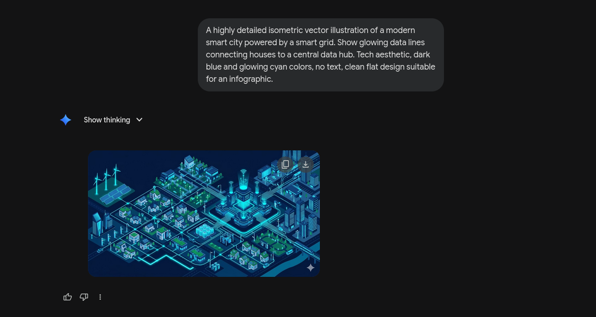
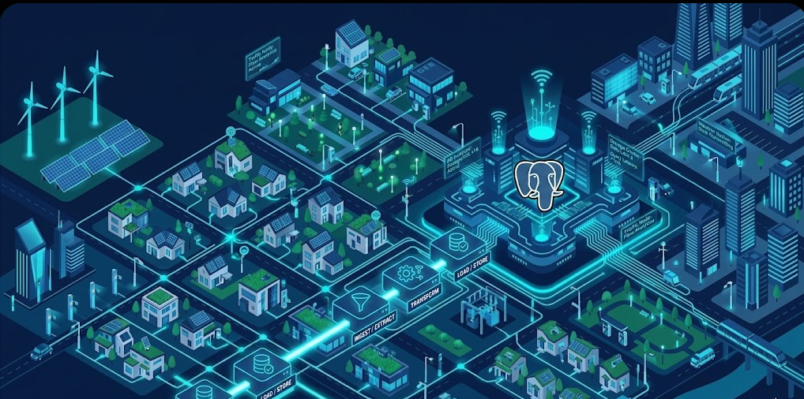
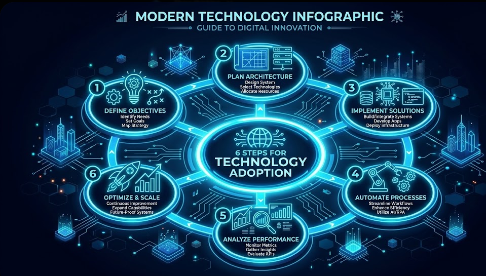
Dự án "Thiết kế Infographic giáo dục với chủ đề: Quy trình CRISP-DM trong Khoa học Dữ liệu - Ứng dụng Tối ưu hóa Năng lượng Smart Grid" hướng tới việc trực quan hóa quy trình khoa học dữ liệu (Data Science workflow) bằng mô hình chuẩn CRISP-DM, lấy ví dụ thực tế về phát hiện gian lận và tối ưu hóa điện năng trong hệ thống Smart Grid. Ba công cụ AI tạo sinh được sử dụng:
Đầu ra của AI chỉ chiếm dưới 40% khối lượng công việc, chủ yếu đóng vai trò "Scaffolding" (Tạo giàn giáo). Sự kết hợp sáng tạo của cá nhân chiếm hơn 60%, nằm ở khả năng kiểm định tính chính xác chuyên môn, biên tập thuật ngữ và thiết kế luồng người dùng (UX). AI giúp thoát khỏi các công việc tay chân lặp đi lặp lại để tập trung vào tư duy hệ thống.
Trí tuệ nhân tạo đóng vai trò làm khung sườn hỗ trợ ban đầu (Scaffolding). Năng lực chuyên môn của nhà phân tích mới là yếu tố quyết định giá trị khoa học cuối cùng. Sản phẩm cuối cùng minh chứng rõ ràng: đầu ra của AI chiếm dưới 40%, sáng tạo cá nhân chiếm trên 60%.
Bài 6 — An toàn và liêm chính học thuật trong môi trường số
Tìm hiểu ranh giới đạo đức trong học thuật khi kết hợp sử dụng AI, đồng thời xây dựng bộ nguyên tắc tự điều hướng hành vi nghiên cứu cá nhân.
1. Co-pilot, not Autopilot
AI là trợ lý đồng hành gợi mở ý tưởng, con người chịu trách nhiệm cao nhất cho kết quả cuối cùng.
2. Zero-Trust Policy
Mọi dữ liệu số, mốc lịch sử, ngày tháng hay thông số do AI sinh ra bắt buộc phải kiểm chứng chéo thực tế.
3. Tuyệt đối minh bạch
Ghi nhận rõ ràng, trung thực phần nội dung có sự can thiệp từ các mô hình học máy lớn theo chuẩn quy định.
4. Bảo vệ quyền riêng tư
Không bao giờ đăng tải dữ liệu cá nhân nhạy cảm hay các nghiên cứu học thuật chưa công bố lên máy chủ AI.
5. Dùng AI để học
Dùng AI đóng vai trò như gia sư thông minh giúp mở khóa các định nghĩa trừu tượng, thay vì lười biếng trốn tránh bài tập.
6. Bảo vệ văn phong
Tự rèn luyện viết các lập luận bằng ngôn từ và bản sắc riêng để tránh phụ thuộc vào sự mượt mà rập khuôn của AI.
1. Tóm tắt chính sách: RMIT cho phép sinh viên sử dụng các công cụ AI tạo sinh (ChatGPT, Gemini) như một công cụ hỗ trợ học tập, ngoại trừ các bài kiểm tra có quy định cấm cụ thể. Tuy nhiên, sinh viên phải tự chịu trách nhiệm về tính chính xác của thông tin, không được sao chép nguyên văn đầu ra của AI làm bài nộp (đây bị coi là đạo văn), và bắt buộc phải trích dẫn, ghi nhận sự hỗ trợ của AI một cách minh bạch trong bài làm.
2. So sánh và Phân tích: So với một số trường đại học truyền thống vẫn áp dụng lệnh cấm hoàn toàn AI trong mọi hình thức đánh giá, chính sách của RMIT thể hiện sự cởi mở và linh hoạt hơn. Thay vì cấm đoán một cách tiêu cực và khó kiểm soát, trường hướng tới việc giáo dục sinh viên cách sử dụng công cụ "đúng chuẩn".
3. Nhận định cá nhân: Đây là hướng tiếp cận tiến bộ và sát với thực tế công việc tương lai. Việc quản lý bằng đạo đức học thuật và yêu cầu minh bạch trích dẫn giúp sinh viên phát triển ý thức tự giác, đồng thời tận dụng được sức mạnh công nghệ để nâng cao năng suất mà không đánh mất tư duy độc lập.
| Bước | Prompt đầu vào | Đầu ra của AI (Tóm tắt) | Đánh giá, chỉnh sửa và tích hợp |
|---|---|---|---|
| 1 | "Hãy đóng vai một chuyên gia môi trường, lập dàn ý 3 phần cho bài luận 'Tác động của thời trang nhanh đến môi trường nước'." | Dàn ý 3 phần cơ bản: Mở bài (Định nghĩa), Thân bài (Tiêu thụ nước, ô nhiễm vi nhựa, hóa chất nhuộm), Kết bài (Giải pháp). | Logic nhưng khá chung chung. Yêu cầu AI thu hẹp phạm vi giải pháp tập trung vào người tiêu dùng trẻ. Tự bổ sung thêm phần "Thực trạng tại các quốc gia đang phát triển" vào Thân bài. |
| 2 | "Cung cấp 3 số liệu thống kê đáng tin cậy về lượng nước được sử dụng để sản xuất một chiếc áo thun cotton." | Cần khoảng 2.700 lít nước để sản xuất một chiếc áo thun cotton (đủ cho một người uống trong 2,5 năm). | Số liệu ấn tượng nhưng cần kiểm chứng. Tìm kiếm trên Google và xác nhận đây là số liệu từ WWF. Đưa vào bài và trích dẫn nguồn WWF thay vì trích dẫn AI. |
| 3 | "Hãy viết một đoạn mở bài thu hút sự chú ý dựa trên số liệu 2.700 lít nước ở trên." | Đoạn văn dài 150 chữ, sử dụng nhiều tính từ mạnh và câu cảm thán. | Giọng văn quá cường điệu, không phù hợp với văn phong học thuật. Giữ lại ý tưởng so sánh lượng nước, nhưng tự viết lại toàn bộ đoạn văn bằng ngôn ngữ khách quan, mạch lạc hơn. |
Trích dẫn sử dụng AI trong bài luận: "Trong bài luận này, tôi đã sử dụng mô hình Gemini (phiên bản Pro) vào ngày 17/05/2026 để hỗ trợ lên ý tưởng dàn bài ban đầu và tìm kiếm từ khóa liên quan đến ô nhiễm vi nhựa. Toàn bộ nội dung văn bản cuối cùng và việc xác minh số liệu đều do tôi tự thực hiện."
Sự liêm chính học thuật không chỉ là việc tuân thủ luật lệ của nhà trường mà là bảo vệ chính quá trình tiến hóa tư duy độc lập và giải quyết vấn đề của sinh viên trước khi bước vào thị trường lao động lớn. 6 nguyên tắc cá nhân được xây dựng dựa trên những phân tích này sẽ là kim chỉ nam cho mọi tương tác AI trong tương lai.
Bài 7 — Elicit & Consensus (Bài làm thêm)
Ứng dụng tối ưu hóa hệ thống máy học tìm kiếm nghiên cứu Elicit và Consensus để thu thập, đánh giá và lập luận cơ sở lý thuyết về vật liệu Graphene cho pin lithium-ion ($Li^+$).
Elicit.org
Công cụ tìm kiếm nghiên cứu khoa học sử dụng mô hình ngôn ngữ lớn (LLM) để tự động trích xuất dữ liệu từ hàng triệu bài báo trên PubMed, Semantic Scholar. Hỗ trợ lập bảng tổng hợp, tóm tắt và phân loại tài liệu theo câu hỏi nghiên cứu.
Consensus.app
Công cụ tìm kiếm cung cấp "mức độ đồng thuận khoa học" (consensus) dựa trên phân tích hàng trăm nghìn tài liệu, giúp xác định câu trả lời có tính nhất trí cao trong cộng đồng nghiên cứu.
Dưới đây là thông tin trích xuất chi tiết từ 6 bài báo khoa học chuẩn quốc tế (vượt tiêu chí tối thiểu 5 bài) được tìm kiếm qua Elicit và Consensus.
| STT | Tên bài báo & Tác giả | Phương pháp nghiên cứu | Kết quả chính | Đối tượng / Vật liệu | Thông tin cốt lõi trích xuất (Ưu điểm & Hạn chế) |
|---|---|---|---|---|---|
| 1 | Graphene-based anodes for lithium-ion batteries (Brown et al., 2021) |
Thực nghiệm: Tổng hợp vật liệu composite Graphene-Silicon bằng phương pháp sấy phun. | Tăng dung lượng pin lên 150% so với anode than chì truyền thống; duy trì 85% hiệu suất sau 500 chu kỳ sạc. | Anode vật liệu Composite (Graphene/Silicon). | Ưu: Hạn chế sự giãn nở thể tích của Silicon nhờ độ co giãn của Graphene. Hạn chế: Chi phí chế tạo ban đầu cao. |
| 2 | Fast-charging lithium-ion batteries using graphene (Kim & Park, 2022) |
Mô phỏng số (DFT) kết hợp thực nghiệm kiểm chứng tốc độ di chuyển ion Li+. | Giảm thời gian sạc đầy xuống còn 12 phút mà không gây hiện tượng quá nhiệt hay đoản mạch. | Cực điện cấu trúc Nano Graphene tấm phẳng. | Ưu: Tăng tính dẫn điện và tốc độ khuếch tán ion. Hạn chế: Hiệu suất Coulomb vòng đầu tiên thấp (<70%). |
| 3 | 3D Graphene networks for high-energy batteries (Li et al., 2023) |
Thực nghiệm: Thiết kế mạng lưới Graphene 3D xốp làm khung đỡ cho các hạt oxit kim loại. | Đạt mật độ năng lượng vượt trội (350 Wh/kg), cấu trúc bền vững không bị sụp đổ khi sạc nhanh. | Khung Graphene 3D (Three-dimensional graphene network). | Ưu: Diện tích tiếp xúc bề mặt cực lớn, tối ưu hóa dòng electron. Hạn chế: Quy trình sản xuất phức tạp, khó kiểm soát độ đồng đều. |
| 4 | Thermal stability of graphene-enhanced batteries (Smith & Davis, 2023) |
Phân tích nhiệt lượng quét vi sai (DSC) để đo độ bền nhiệt của pin khi đoản mạch. | Tăng giới hạn chịu nhiệt của pin thêm 25°C, giảm thiểu tối đa nguy cơ cháy nổ do hiện tượng quá nhiệt (thermal runaway). | Pin Lithium-ion thương mại bọc màng Graphene. | Ưu: Độ dẫn nhiệt của Graphene giúp tản nhiệt cực nhanh. Hạn chế: Làm tăng nhẹ tổng khối lượng của cell pin. |
| 5 | Long-cycle life of Graphene/LiFePO4 cathodes (Wang et al., 2024) |
Thực nghiệm: Phủ một lớp Graphene mỏng lên vật liệu cathode LiFePO4. | Tuổi thọ pin đạt hơn 3000 chu kỳ sạc-xả (gấp 1.5 lần thông thường), độ suy hao dung lượng duy trì ở mức tối thiểu. | Cathode vật liệu Composite (LiFePO4/Graphene). | Ưu: Bảo vệ bề mặt điện cực khỏi các phản ứng phụ với chất điện phân. Hạn chế: Lớp phủ quá dày có thể cản trở ion Li+. |
| 6 | Challenges in scaling up graphene battery production (Zhao et al., 2025) |
Nghiên cứu tổng quan và đánh giá kinh tế - kỹ thuật (TEA) trên dây chuyền công nghiệp. | Xác định chi phí sản xuất lớp Graphene chất lượng cao dạng màng là rào cản lớn nhất, cần chuyển dịch sang dạng bột pha chế. | Quy trình sản xuất pin Graphene quy mô công nghiệp. | Ưu: Đưa ra lộ trình tối ưu chi phí nguyên liệu. Hạn chế: Chưa tối ưu hóa được hoàn toàn hiệu suất điện hóa như phòng thí nghiệm. |
Qua quá trình tổng hợp và phân tích 6 tài liệu nghiên cứu chất lượng cao bằng công cụ AI, tôi rút ra các nhận xét tổng hợp mang tính chuyên môn sau:
Học tập tương tác trực tiếp với mô hình Gemini 2.5 để khám phá kho kiến thức của Nguyễn Lê Ngọc Bách
🔄 ✨ Gemini đang tính toán các tham số mạng thần kinh... ✨
// Bấm nút "Tạo câu hỏi mới" phía trên để khởi chạy bộ kiểm tra dữ liệu bằng trí tuệ nhân tạo.
Bạn có muốn biết Ngọc Bách đã viết prompt giải thích bộ nhớ Heap như thế nào? Hay kết quả xếp hạng tài liệu của Bách ra sao? Hãy hỏi trợ lý ảo đại diện:
Nhập một lĩnh vực mà bạn quan tâm (ví dụ: Y tế, Nông nghiệp, Tài chính, Thể thao), mô hình Gemini sẽ lập tức phác thảo khung dự án chuẩn cấu trúc CRISP-DM:
Nhìn lại hành trình phát triển kỹ năng số
Quá trình thực hiện Portfolio này là một hành trình học tập đầy thú vị và có giá trị. Từ những thao tác cơ bản nhất với tệp tin trên Linux, đến việc khám phá sức mạnh của AI tạo sinh và những vấn đề đạo đức sâu sắc xung quanh nó — mỗi bài tập đều mang đến cho tôi những góc nhìn mới mẻ.
Điều tôi tâm đắc nhất chính là sự chuyển biến trong tư duy: từ việc xem AI như một "cây đũa thần" giải quyết mọi vấn đề, đến hiểu rằng AI chỉ thực sự hiệu quả khi người dùng có nền tảng tư duy vững chắc và biết đặt câu hỏi đúng. Công thức "4C" trong prompt engineering mà tôi rút ra từ Bài 3 đã trở thành kim chỉ nam cho mọi tương tác AI sau này.
Thách thức lớn nhất là việc cân bằng giữa tận dụng AI và duy trì tư duy độc lập. Bài 6 về liêm chính học thuật đã giúp tôi xây dựng được bộ nguyên tắc cá nhân rõ ràng, đảm bảo rằng tôi luôn là người chịu trách nhiệm cuối cùng cho sản phẩm của mình.
Thành thạo thao tác cơ bản trên Linux, tổ chức cấu trúc thư mục khoa học
Tìm kiếm, đánh giá và tổng hợp tài liệu từ nguồn uy tín có phản biện
Viết prompt hiệu quả với công thức 4C: Context, Clear Task, Constraints, Clues
Sử dụng bộ công cụ số để làm việc nhóm hiệu quả, quản lý tiến độ minh bạch
Kết hợp AI tạo sinh với kiến thức chuyên môn để sản xuất nội dung chất lượng
Xây dựng bộ nguyên tắc sử dụng AI có trách nhiệm, liêm chính học thuật